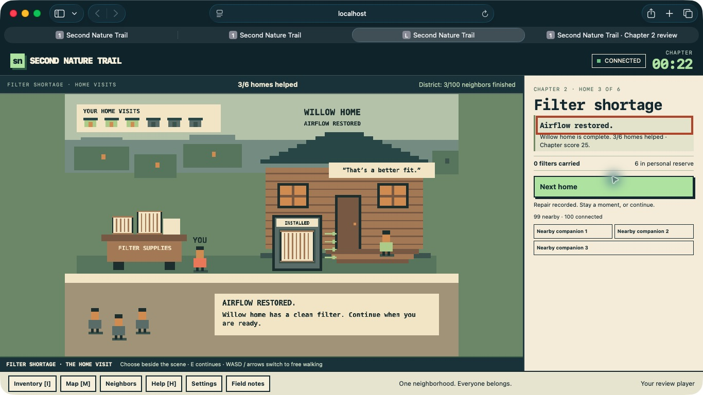
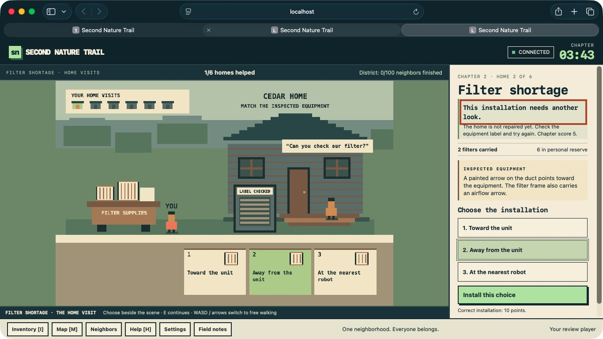
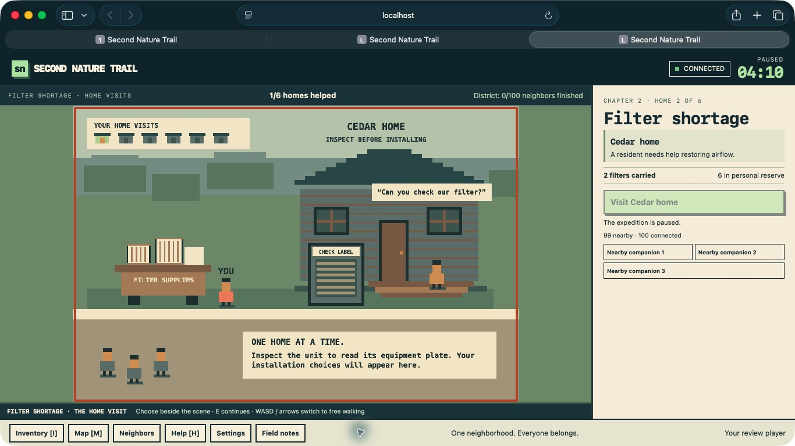

Art-direction review · November 18A neighborhood, then a home visit
Connected front walks and varied yards keep the existing sixteen building silhouettes. The Great Filter Shortage now brings the work order into the scene: a resident, the equipment label, a replacement choice, and a visible repair.
This is the chapter 2 review slice. Chapters 3–8 retain their existing presentation. The preview events are isolated local fixtures; the existing saved games were preserved.
Overview · same player position and progress
Overview · one player and 99 peers at the first home
Chapter 2 · the same inspected 16 × 20 work order
The same decision with 99 peers
A successful installation · actual local play
One player · pointer installation · 10 points, one filter used99 peers · keyboard 3, then E · warm home, fitted filter and airflow
These short clips use actual native Safari screen frames at their recorded elapsed times (about 14 captures/second). They are not animation mockups or performance benchmarks. All captures show the 1366 × 768 laptop window. Early captures precede the final nearby/connected wording and minor scene-label cleanup.
Final chapter 2 scene · 99 peers at the home

Three shared completions light distant windows. The player’s own installation has separate progress and feedback.Rejection and recovery

Wrong direction: no repair, no filter consumed, existing 5-point penalty.
Reload: recorded progress remains; the next home is still unresolved.Developer verification and remaining review
291 full-suite tests passed; 39 affected checks passed after final visual changes, including six authored filter jobs, scoring, supplies, rejected actions, stale and pending requests, reload state, keyboard focus, crowd bounds, and all sixteen paths against unchanged walkability. Native play verified pointer and keyboard repair, wrong-answer recovery, map navigation and reload. The two crowd screenshots use the same event and player identities before and after the static asset change. Primary local demo assets were checked against the working files.
Jim’s art-direction review and employee usability testing remain. The screenshots establish the rendered result; they do not claim that human playtesting has happened.